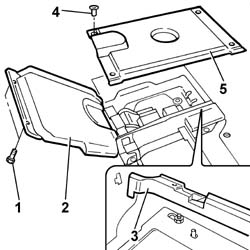
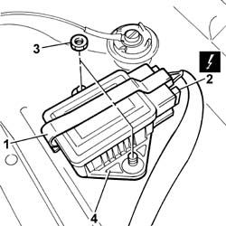

3350E30 LATERAL ACCELERATION AND YAW SENSOR R R
- Path
- Procedures > 33 BRAKES > 3350 DRIVE CONTROL > 3350E VEHICLE DIRECTION CONTROL SYSTEM VDC > 3350E30 LATERAL ACCELERATION AND YAW SENSOR R R
- Kind
- repair procedure (removal / refitting; the operation number is the code)
- Applies to
- all engines; all production periods
- Interactive page
- https://sloeber94.github.io/elrnDB-fUlss/en/#/179007337
Applies to: all engines; all production periods
 Removing
Removing
 Refitting
RefittingOp. 5530B56 BATTERY DRIP TRAY COVER - R.R.
- Disconnect the negative battery terminal.
Op. 7065C56 ODDMENT COMPARTMENT UNDERNEATH FRONT SEATS - R.R.
Op. 7045A10 L/H OR R/H FRONT SEAT (ONE) - R+R
- < R1 > [Both]
1. Undo the retaining bolts.
2. Open the top lid.
3. Raise the front floor
4. Unscrew the fastenings.
5. Remove the lower cover.

Applies to: all engines; all production periods
1. Prise up and remove the safety catch.
2. Disconnect the electrical connection.
3. Undo the retaining nuts.
4. Remove the yaw sensor.

Applies to: all engines; all production periods
Refitting
Removing- Position the yaw sensor.
- Tighten the retaining nuts.
- Connect the electrical connection.
- Postion the safety catch.
- Raise the rear floor
- Fit the lower cover.
- Tighten the fastenings.
- Close the top lid.
- Tighten the retaining bolts.
Op. 7045A10 L/H OR R/H FRONT SEAT (ONE) - R+R
- < R1 > [Both]
Op. 7065C56 ODDMENT COMPARTMENT UNDERNEATH FRONT SEATS - R.R.
- Connect the negative battery terminal.